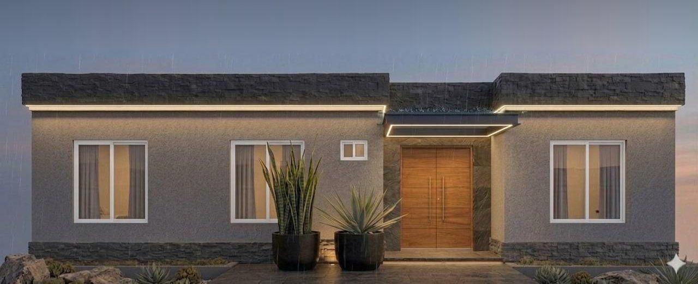

Un barrio privado en desarrollo en Puiggari, Libertador San Martín. Es el primer caso real donde aplicar el modelo de barrio inteligente: preparar el loteo desde el diseño para agua, energía, conectividad y seguridad, antes de que se construyan las casas.
Cada dato indica de dónde sale. Las hipótesis no se vuelven hechos por repetirlas.
Tema
Información
Fuente
Estado
Ubicación
Puiggari, Villa Libertador San Martín, departamento Diamante, Entre Ríos
Aviso inmobiliario y aportes del proyecto
Publicado
Situación
En desarrollo; ya hay al menos una casa construida y el resto de los lotes sin edificar
Aportado por el autor; aviso inmobiliario
Informado
Administración
Fideicomiso
Aportado por interesados
Por verificar
Plano
Plano de mensura y subdivisión, julio de 2024, escala 1:2000, con visado municipal. Superficie total 144.342 m² (≈ 14,4 ha)
Foto del plano aportada por el autor
Documentado
Lotes
84 lotes numerados, en cinco grupos, más reservas R1 a R9. Avisos comerciales indican unos 1.000 m² por lote
Cartel de loteo en el ingreso; avisos
Documentado
Agua
Hay plano de infraestructura “conforme a obra” de la red interna de agua potable. El plano no indica de dónde viene el agua (pozo propio o red municipal); antes se informó pozo y un aviso dice “agua corriente”
Plano de infraestructura; aportes y aviso
Fuente por confirmar
Cloacas
Red cloacal “conforme a obra”: baja por gravedad hacia el norte, con bocas de registro en las calles, hasta una estación de bombeo que impulsa por el camino vecinal a la conexión municipal
Plano de infraestructura
Documentado
Electricidad
Mencionada en avisos; calles alumbradas según referencias comerciales
Avisos
Por verificar
Internet
Desconocido
—
Pendiente
Documento recibido
Plano de mensura (julio de 2024)
Hay cuatro documentos: el plano de mensura (julio de 2024), el cartel de loteo del ingreso, el plano de loteo por manzanas y el plano de infraestructura de agua y cloacas. No se publican como imagen porque traen nombres de titulares, compradores, firmas y sellos; con los cuatro redibujamos el mapa de abajo y pasamos sus datos a tablas.
Lo que dice el plano
Dato
Lectura del plano
Objeto
Mensura y subdivisión de la parcela
Ubicación
Provincia de Entre Ríos, departamento Diamante, distrito Palmar, ejido de Libertador San Martín. Frente a la Ruta Nacional 131 (pavimentada) y al acceso a Puiggari
Fecha y escala
Crespo, julio de 2024 · escala 1:2000 · coordenadas POSGAR 2007 (Gauss-Krüger)
Antecedentes
Planos Nº 24.001 (título 1) y Nº 30.338 (título 2) · zona 2da
Superficie total
144.342,25 m² según mensura (136.628,19 m² del título 1 + 7.714,06 m² del título 2)
Calles privadas
Calle 1: 24.142,30 m² · Calle 2: 11.039,43 m² (juntas, casi una cuarta parte del terreno)
Superficies por fracción
Fracción
m²
Uso
A1 · A2 · A3
13.515,21 · 6.000,00 · 10.000,00
Manzanas A1 (lotes 18 a 30), A2 (11 a 16) y A3 (1 a 10): 13, 6 y 10 lotes
B1 · B2
4.300,00 · 2.008,00
Manzanas B1 (31 a 34) y B2 (35 y 36): 4 y 2 lotes
C
21.001,00
Manzana C (37 a 57): 21 lotes, la más grande
D1 · D2
7.994,61 · 5.000,00
Manzanas D1 (58 a 61 y 67 a 70) y D2 (62 a 66): 8 y 5 lotes
E
14.390,29
Manzana E (71 a 84): 14 lotes
R1 · R2-R3 · R9
1.268,04 · 2.000,00 · 2.507,54
Desagüe pluvial
R5 · R6 · R8
2.842,85 · 3.638,97 · 7.714,06
Espacios verdes (R5 y R6 con construcciones de una planta)
R7
2.979,95
Club house
17
1.000,00
Lote 17, desglose separado entre las manzanas A2 y A1
Mapa de loteo
A1 · 17–30
A2 · 11–16
A3 · 1–10
B1 · 31–34
B2 · 35–36
C · 37–57
D1 · 58–61, 67–70
D2 · 62–66
E · 71–84
Reservas R1–R9
Cloaca (sentido del flujo)
Redibujado a partir del cartel del ingreso, el plano de loteo por manzanas y el plano de infraestructura de agua y cloacas. Es un esquema, no está a escala. Pasá el cursor o tocá un lote para ver su número y su manzana. Ver foto del cartel.
El terreno es un triángulo largo que se abre desde la ruta hacia el norte. Se entra por un bulevar desde la RN 131, con una rotonda que reparte hacia el barrio y hacia el club house. Al norte limita con un camino vecinal y al oeste con otros loteos y una calle pública.
Grupo
Lotes
Dónde
Franja oeste
1 a 30 (30)
Manzanas A3, A2 y A1 y el lote 17, a lo largo del lado diagonal. La reserva R9 separa A3 de A2
Franja norte
31 a 36 (6)
Manzanas B1 y B2, separadas por la reserva R1
Franja este
37 a 57 (21)
Manzana C, sobre el lado recto este, hasta la reserva R5
Manzana norte
58 a 70 (13)
Manzanas D1 (oeste) y D2 (este), separadas por las reservas R2 y R3
Manzana central
71 a 84 (14)
Manzana E, triangular
Reservas
R1 a R9
R1, R2-R3 y R9: desagüe pluvial. R4: plaza triangular. R5 y R6: franjas verdes a los lados del bulevar de ingreso. R7: club house. R8: verde entre la rotonda y el lote 1
El cartel marca además cinco puntos con letras (A a E), uno por grupo de lotes, y una rotonda frente a la reserva R4. Ninguno de los planos dice qué son: pueden ser hidrantes, cámaras o tableros. Por verificar
Una red en anillo. Las calles forman un circuito cerrado alrededor de las manzanas: la fibra y el agua pueden ir en anillo, así un corte no deja sin servicio a todo un sector.
Los puntos A–E como nodos. Hay uno por grupo de lotes. Si ya son tableros o cámaras, son el lugar natural para cajas de distribución de fibra y gateways de sensores.
La estación de bombeo es el punto más crítico. Si una bomba falla, las cloacas de 84 casas se acumulan en un solo lugar. Necesita sensores de nivel, alarma de rebalse, aviso de falla y de corte de luz al celular del administrador, y energía de respaldo (por ejemplo, solar con baterías o grupo electrógeno).
Lluvia que entra a las cloacas. Medir el caudal que bombea la estación muestra si en las tormentas entra agua pluvial a la red: es el primer indicio de tapas rotas o conexiones mal hechas.
Bocas de registro con sensor en los puntos bajos. Avisan una obstrucción antes de que rebalse en una vereda.
Ingreso en embudo. Todo entra por el bulevar desde la ruta: un solo pórtico de acceso cubre el barrio, y el bulevar con la rotonda da lugar para que esperen las visitas sin frenar la ruta. El camino vecinal del norte puede quedar como salida de emergencia controlada.
Agua y cloacas: lo que muestra el plano de infraestructura
Plano “conforme a obra” de la red de agua potable y desagües cloacales del barrio cerrado La Lomada (Ruta 131 y camino rural, planta urbana de Libertador San Martín). Es decir, dibuja lo que se construyó, no un proyecto. No se publica la foto porque incluye nombres de propietarios y firmas; la capa Cloacas y bombeo del mapa lo redibuja.
Cloacas por gravedad. Los caños van por las calles con bocas de registro (tapas de inspección) y bajan hacia el norte.
Estación de bombeo. En el extremo noreste, junto al camino vecinal, junta las cloacas de todo el barrio.
Impulsión a la red municipal. Desde la estación, una cañería a presión corre por el camino vecinal hasta la conexión con la red de la ciudad.
Agua potable. La red interna recorre las mismas calles, con conexión domiciliaria a cada lote. La fuente sigue por confirmar.
Qué cambia para el barrio inteligente
Drenaje con datos. Tres reservas (R1, R2-R3, R9) son para desagüe pluvial: son el lugar natural para sensores de nivel y lluvia, con alerta temprana de anegamiento.
Riego y verde medido. Unos 14.000 m² de espacios verdes justifican riego por sensores de humedad y medición separada del agua común.
Club house como centro técnico. R7 puede alojar el rack del barrio, la salida a internet de respaldo, el panel de administración y el punto de encuentro ante emergencias.
Ductos a lo largo de las calles. Calle 1 y Calle 2 recorren todo el terreno: si se abren o completan, es el momento de dejar caños para fibra y cámaras de inspección hasta cada lote.
Un solo acceso controlado. El frente a la Ruta 131 y al acceso a Puiggari define dónde va la portería, la lectura de patentes y la iluminación del ingreso.
Superficie de cada lote. El mapa numera los 84 lotes pero no da medidas: falta el plano de loteo aprobado con la superficie de cada uno.
Primera casa del barrio
Una casa ya construida, pensada como casa inteligente
Ya hay al menos una casa construida en La Lomada. La imagen es un diseño de referencia (render hecho con IA), no una foto. Encima dibujamos los equipos de energía y agua que le sumaríamos (paneles solares, termotanque solar, tanque con sensor, estación meteorológica, cargador y pavimento drenante) y marcamos qué se podría automatizar. A propósito no indicamos en qué lote está ni dónde estarían realmente sus cámaras.

Imagen ilustrativa: render generado con IA; los paneles, el termotanque, el tanque, la estación, el cargador y el pavimento drenante están dibujados encima. Los números indican lugares típicos, no la instalación real.
Paneles solaresSobre el techo plano: producen electricidad de día. El sistema muestra cuánto se genera, usa lo que sobra para el termotanque, el lavarropas o el auto, y avisa si un panel rinde menos por suciedad o sombra.
Termotanque solarCalienta el agua con el sol. Un sensor de temperatura prende la resistencia de apoyo solo los días nublados y protege los tubos de las heladas.
Tanque de aguaSensor de nivel en el tanque de reserva: avisa si baja de golpe (pérdida), si se queda vacío, y corta la bomba para que no trabaje en seco.
Estación meteorológicaPluviómetro, viento y temperatura en el techo. Con esos datos la casa cierra cortinas con viento fuerte y no riega si llovió.
Agua en el techo planoUn techo plano con parapeto junta agua. Un sensor en cada desagüe avisa si se tapa antes de que filtre.
LED de contornoLa línea de luz bajo el borde del techo ya está en el diseño. Se prende sola al anochecer, baja de intensidad a medianoche y parpadea si hay una alarma.
Luz del alero con presenciaSe enciende al llegar alguien y queda tenue el resto de la noche.
Cerradura inteligenteEn la puerta doble: abre con huella, código o el celular, y avisa si quedó sin llave. Las visitas reciben un código que vence.
Timbre con cámaraAtiende desde el celular aunque no haya nadie, y graba solo cuando alguien se acerca a la puerta. La imagen se queda en casa.
Ventanas y cortinasSensor de apertura y de vibración en cada ventana. Las cortinas se bajan solas con el sol fuerte o al salir de viaje, y simulan presencia.
Ventana chica: humedadSi es baño o lavadero: sensor de humedad que prende la ventilación y avisa si hay pérdida de agua en el piso.
DormitoriosSensores de apertura, temperatura y humedad. El aire acondicionado no arranca si la ventana quedó abierta.
Medidor de energíaEn el tablero: muestra en el celular cuánto consume cada circuito, cuánto aportan los paneles, y corta lo que quedó prendido.
Cargador de auto eléctricoCarga cuando sobra energía solar o en el horario más barato, y avisa cuando terminó.
Macetas y jardínSensor de humedad de tierra con riego por goteo: riega solo cuando hace falta y no riega si va a llover.
Luces de caminoBalizas en el piso que se encienden con poca luz y guían hasta la puerta.
Pavimento drenanteEl piso de la entrada deja pasar la lluvia hacia una cisterna enterrada. Un sensor de nivel decide cuándo usar esa agua para riego o lavado, y la entrada no se encharca.
Ubicación, titularidad y datos del pozo (caudal, profundidad, bombeo, almacenamiento). Análisis físico-químico y microbiológico en laboratorio habilitado. Tratamiento, distribución y plan ante cortes. Un sensor no hace potable el agua: mide cambios, no reemplaza ensayos.
📶
Conectividad
Proveedores y tecnologías disponibles (fibra de la cooperativa, enlaces, móvil, satélite), cobertura real en lotes y espacios comunes, y costo recurrente de una red del barrio.
🛣️
Infraestructura
Calles, alumbrado, energía, drenaje pluvial, saneamiento y residuos. Planos aprobados, obras hechas y pendientes, accesos, perímetro y emergencias.
📄
Legal y administración
Facultades y obligaciones del fideicomiso, reglamento interno, permisos municipales, y quién será responsable técnico cuando el barrio esté habitado.
Paso 2
Qué conviene dejar previsto desde el loteo
Son líneas de estudio, no instalaciones confirmadas. Lo más barato es prever ahora lo que después costaría romper.
Caños y cámaras de inspección para fibra hasta cada lote, aprovechando la apertura de calles.
Sensores de nivel y de bombeo en el pozo y el tanque, con alarma local, y medición del agua por lote.
Alumbrado LED con telegestión y medición de energía en las instalaciones comunes.
Acceso por patente y QR para visitas, con retención corta y sin reconocimiento facial.
Red segmentada para seguridad, sensores, administración y vecinos, con salida de respaldo.
Inventario georreferenciado de redes y activos desde el primer día, para mantenimiento y para el futuro gemelo digital.
Reglamento que habilite energía solar. Que cada casa pueda poner paneles y termotanque solar en el techo, orientados al norte y sin superar el parapeto, para que el barrio mantenga su imagen.
Paneles en el club house (R7) para las instalaciones comunes: bombeo del pozo, portería, alumbrado y el rack de comunicaciones, con baterías para seguir funcionando en un corte de luz.
Alumbrado solar en espacios verdes (R4, R5, R8) y caminos internos, donde llevar cable cuesta más que poner una luminaria autónoma.
Lluvia aprovechada. Pavimento drenante y cisternas en las casas, y las reservas pluviales (R1, R2-R3, R9) con sensores de nivel: menos agua a la calle y riego de espacios verdes con agua de lluvia.
Carga de autos eléctricos en el club house, alimentada por los paneles comunes.
Panel de incidencias para el fideicomiso y luego el consorcio; IA para detectar anomalías y priorizar inspecciones, siempre con validación humana.
Plan de trabajo
Seis pasos antes de presupuestar
Reunir documentaciónPlano de loteo aprobado con medidas (ya hay mensura 2024 y mapa de loteo), memoria técnica, contratos y permisos del desarrollo.
Inspección de campoRecorrido, relevamiento topográfico e inventario georreferenciado.
Confirmar serviciosAgua, energía, drenaje y conectividad, con mediciones.
Riesgos y obligacionesRiesgos críticos (agua, inundación, accesos) y obligaciones legales del fideicomiso.
Alternativas con costosOpciones técnicas con inversión y costo de operación, usando la tabla de referencia.
Piloto de bajo riesgoPor ejemplo, telemetría del pozo y el tanque, medido durante unos meses.
Cómo se documenta
Carpeta del barrio
La documentación sigue la jerarquía ciudad → barrio → casa. Lo público va en este sitio; planos sensibles, accesos y datos de residentes van en un repositorio privado.
00Plan maestro
Estrategia, arquitectura y fases.
01Diagnóstico
Relevamientos y estado real.
02Ingeniería
Criterios y diseños técnicos.
03Accesos y seguridad
Gobierno de accesos (privado).
04Agua y saneamiento
Captación, almacenamiento, distribución.
05Energía
Suministro, medición y alumbrado.
06Conectividad
Redes y comunicaciones.
07–09Automatización, IA y gemelo
Control de servicios, analítica, GIS.
10–12Operación, planos y fuentes
Mantenimiento, planos controlados, permisos.
Condición para avanzar
Antes de dimensionar equipos o presupuestar: planos aprobados, relevamiento topográfico, estudios de agua y saneamiento, disponibilidad eléctrica y de telecomunicaciones, normativa aplicable y facultades del fideicomiso.